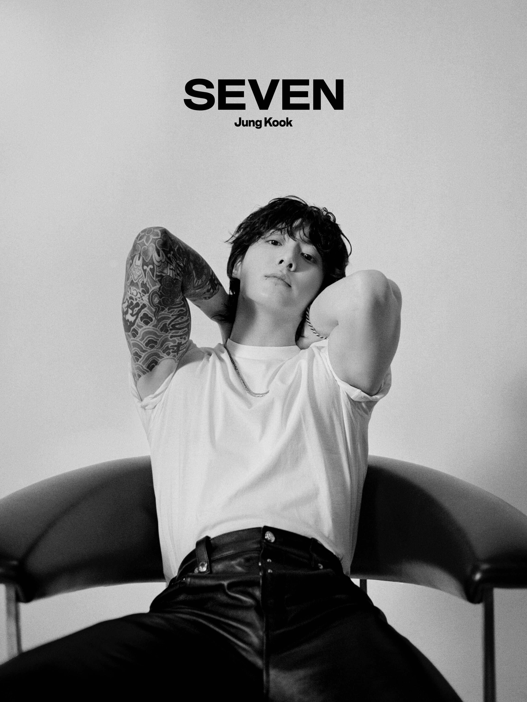
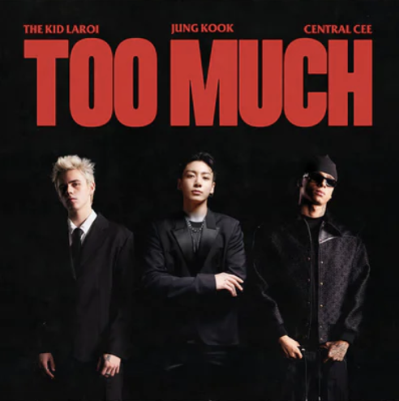
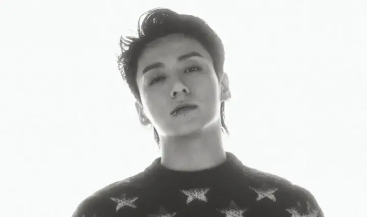
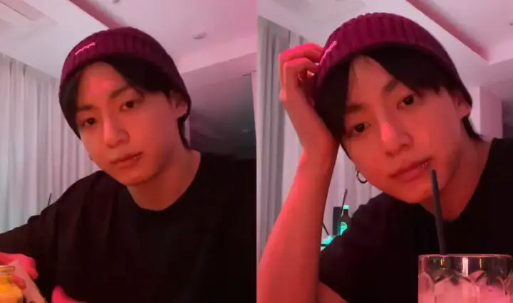
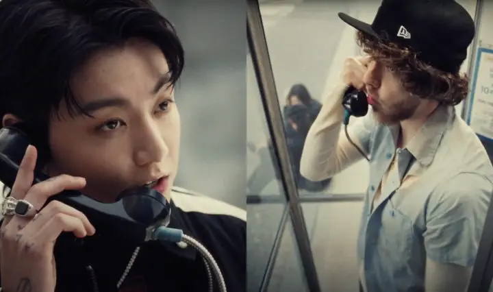
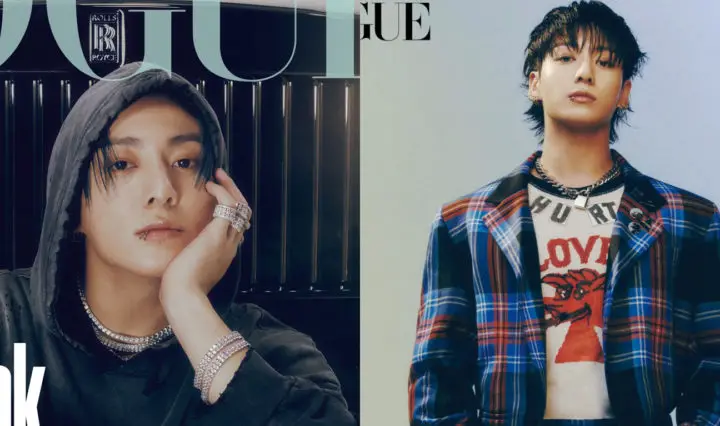
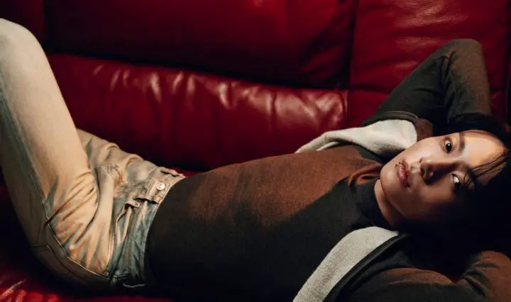
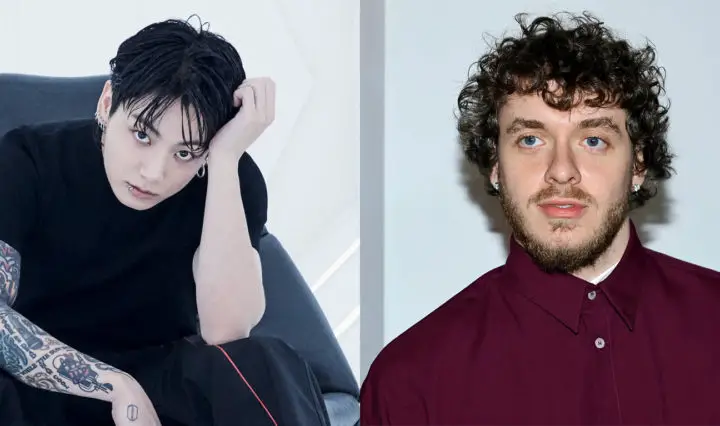

Jungkook
Jungkook premier artiste solo coréen à classer 3 chansons en même temps dans le TOP10 du Daily Global de Spotify

Jungkook (BTS) répond aux rumeurs de couple soulevées par une vidéo floue d'une sasaeng

The Kid LAROI, Jungkook (BTS) et Central CEE dévoilent le MV de « TOO MUCH »

Jungkook (BTS) annonce son premier concert solo

Jungkook (BTS) dit qu'il s'en fiche qu'on puisse trouver son adresse en ligne

Jungkook (BTS) fait son comeback avec le MV de « 3D » feat. Jack Harlow

Jungkook (BTS) pose en couverture de VOGUE KOREA

Jungkook (BTS) pose en couverture de DAZED

Jungkook (BTS) annonce la date de son comeback solo (feat. Jack Harlow) et dévoile des teasers